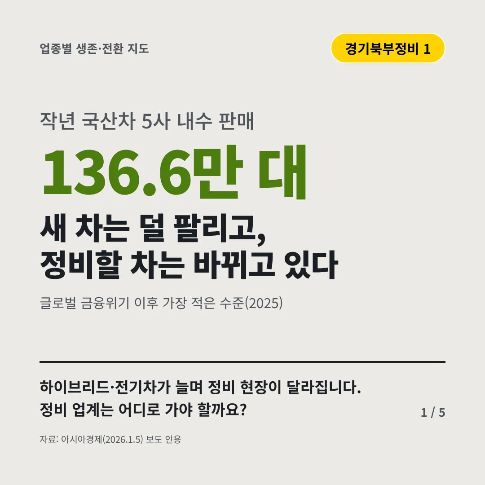
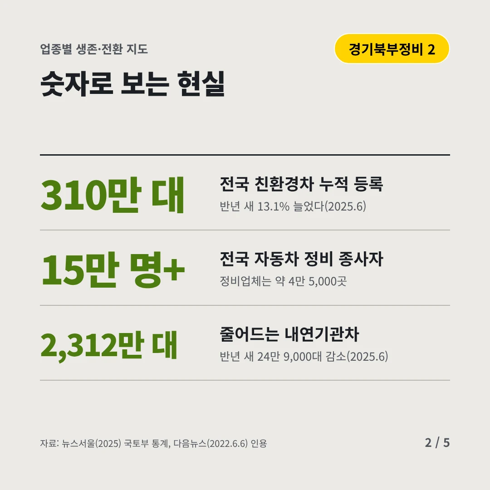
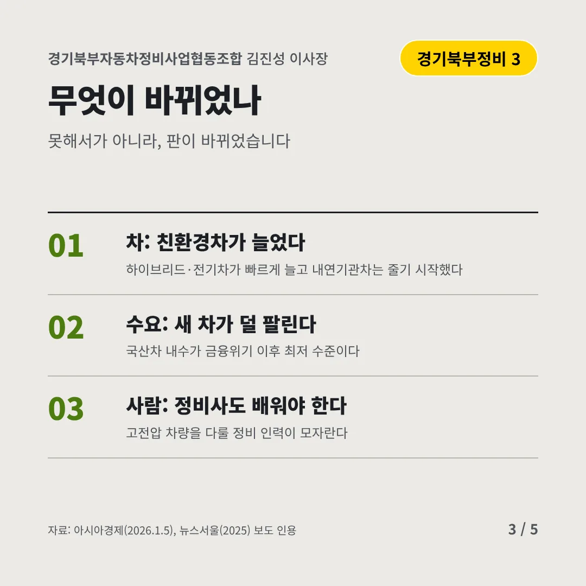
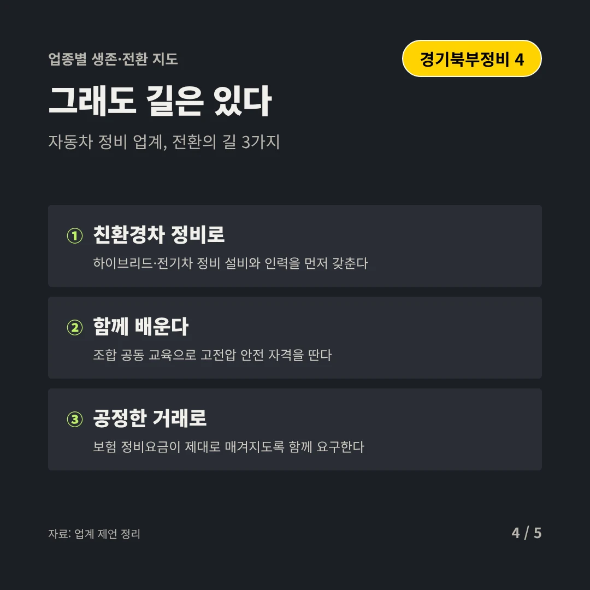
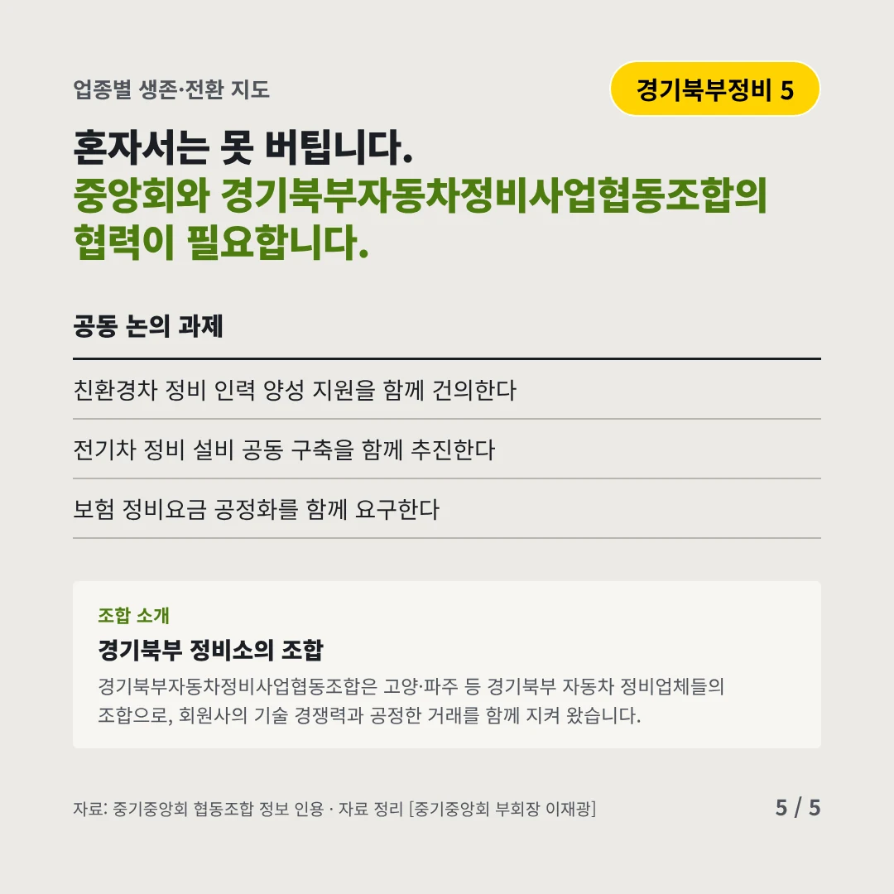
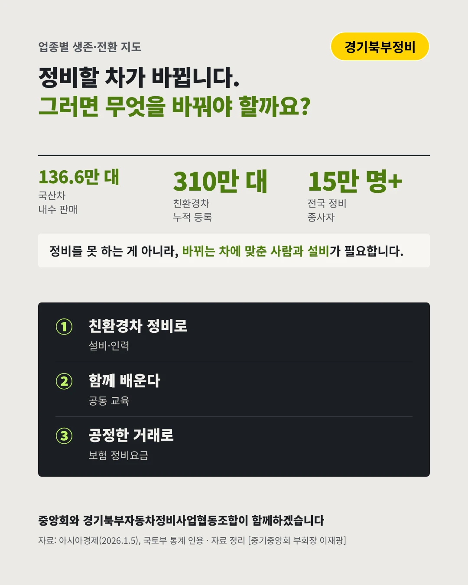

경기북부자동차정비사업협동조합
새 차는 덜 팔리고, 정비할 차는 바뀌고 있다
136.6만 대 작년 국산차 5사 내수 판매






하이브리드·전기차가 늘며 정비 현장이 달라집니다. 정비 업계는 어디로 가야 할까요?
숫자로 보는 현실
- 310만 대전국 친환경차 누적 등록반년 새 13.1% 늘었다(2025.6)
- 15만 명+전국 자동차 정비 종사자정비업체는 약 4만 5,000곳
- 2,312만 대줄어드는 내연기관차반년 새 24만 9,000대 감소(2025.6)
무엇이 바뀌었나
- 차: 친환경차가 늘었다하이브리드·전기차가 빠르게 늘고 내연기관차는 줄기 시작했다
- 수요: 새 차가 덜 팔린다국산차 내수가 금융위기 이후 최저 수준이다
- 사람: 정비사도 배워야 한다고전압 차량을 다룰 정비 인력이 모자란다
그래도 길은 있다
- 친환경차 정비로하이브리드·전기차 정비 설비와 인력을 먼저 갖춘다
- 함께 배운다조합 공동 교육으로 고전압 안전 자격을 딴다
- 공정한 거래로보험 정비요금이 제대로 매겨지도록 함께 요구한다
한 장 요약

조합 소개
경기북부자동차정비사업협동조합은 고양·파주 등 경기북부 자동차 정비업체들의 조합으로, 회원사의 기술 경쟁력과 공정한 거래를 함께 지켜 왔습니다.
자료: 아시아경제(2026.1.5), 뉴스서울(2025), 다음뉴스(2022.6.6)